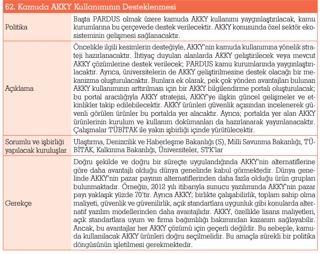

Açık kaynaklı yazılımlar, en küçüğünden cep telefonu, saat gibi gömülü sistemlerden, en büyüğünden süper bilgisayarlara, ev kullanıcılarından KOBİ'lere, kamu kurumlarından her türden okullara, tüm kurum ve bireyleri rahatça kullanabileceği, gereksinimlere göre basitleştirilebilen,sağlamlaştırılabilen, güçlendirilebilen yazılımlardır.
Lisanslı yazılımların son yıllarda bir kaynak israfı olarak görülmesinin ardından açık kaynaklı kodların kamu harcamalarında büyük oranda bir tasarruf sağlayacağı düşünülmektedir.

Geri dön...